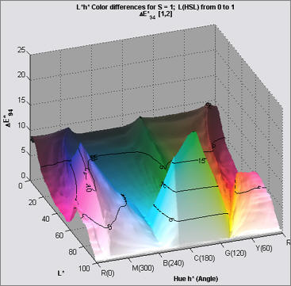
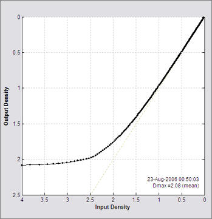

Gamutvision ICC profile visualization/analysis software released
Boulder, Colorado - August 23, 2006 - Imatest LLC announces the release of Gamutvision, a powerful program for visualizing digital color workflows and color management operations. Gamutvision is much more than just a gamut viewer. You can view gamut mappings and rendering intents in depth, and you can preview the effects of workflow settings and materials on your final output.
With Gamutvision you can
Gamutvision's versatile displays allow you to examine ICC profiles and gamut mappings with unprecedented precision and detail. You can view input and output gamuts in 3D L*a*b* space and on 2D a*b*, xy, and u'v' planes, and you can view Black & White response curves. You display all important color difference metrics, including Delta-E, Delta-E 94, and Delta-E CMC. And you can use these metrics to preview how images change when sent to printers-- a far more accurate and informative approach than the traditional gamut warning.
Gamutvision can be used by
The image below shows a 3D L*a*b* gamut volume in the Gamutvision window (reduced slightly): the wireframe is the Adobe RGB (1998) workspace. The solid is the output, mapped with (relative) Colorimetric rendering intent. The controls make it easy to compare different profiles and settings.
The display can be changed with a click or two. Delta-E 94 color differences and Black & White density response are shown below.
 ΔE94 |
 B&W density response |
The tour on www.gamutvision.com/tour is an excellent introduction to Gamutvision's capabilities. Full documentation is available online at www.gamutvision.com/docs. Gamutvision runs under Windows 2000, XP, and later, with a recommended minimum of 256 MB RAM and 1024x768 pixel screen resolution.
The price is $79 USD. An evaluation version that allows up to 20 runs of individual modules may be downloaded from www.gamutvision.com/download. Secure online purchase is available through Regsoft.com. Purchase entitles you to one year of upgrades.
Imatest LLC was founded in Boulder, Colorado in 2004 to develop software for measuring the performance of digital cameras, color management, and color workflows. It is a spinoff of the highly informative digital photography website, normankoren.com. For more information, visit www.gamutvision.com or contact Norman Koren through www.gamutvision.com/docs/contact.html or at 303-546-6639.